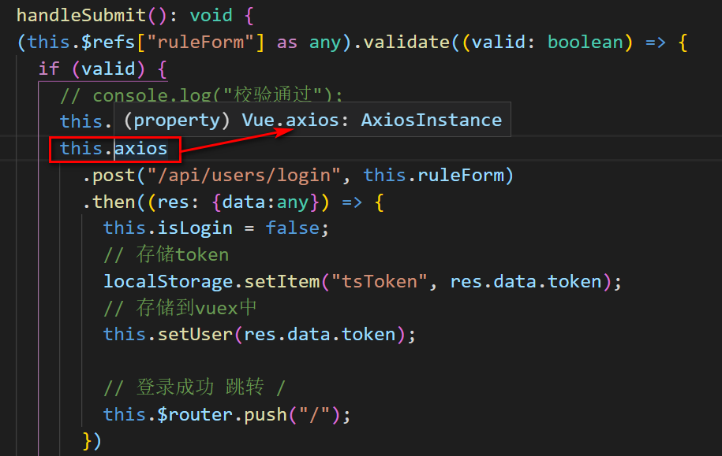

原文出处:本文由博客园博主海因斯坦提供。
原文连接:https://www.cnblogs.com/yinhaiying/p/11314332.html
原文连接:https://www.cnblogs.com/yinhaiying/p/11314332.html
Vue+Typescript中在Vue上挂载axios使用时报错
在vue项目开发过程中，为了方便在各个组件中调用axios，我们通常会在入口文件将axios挂载到vue原型身上，如下：
main.ts
import Vue from 'vue'
import axios from './utils/http'
Vue.prototype.$axios = axios;这样的话,我们在各个组件中进行请求时，就可以直接使用this.$axios，但是在ts中使用this.$axios进行请求时，会进行报错,如下所示：

从图中我们可以看出ts在Vue身上检测不到$axios。通过
在网上查阅发现：在ts中，不识别vue下面挂$axios，不可以挂在原型链上。也就是说我们手动在Vue原型身上挂载$axios,ts无法识别到。
解决方法1：手动告诉ts忽略这里的类型检测
虽然ts无法检测到Vue原型身上的prototype,但是实际上我们是挂载成功的，也就是说我们是可以正常使用的，唯一需要解决的是ts的类型检测问题，因此，我们可以指定this为any类型，这样的话就可以避免报错问题。如下所示：
(this as any).$axios
.post("/api/users/login", this.ruleForm)
.then((res: {data:any}) => {}但是使用any意味着失去了类型安全保障，并且你得不到工具的支持。
解决方法2：使用vue-axios这个包来处理这个挂载问题
我们可以通过使用vue-axios这个包来处理这个挂载问题。vue-axios 是在axios基础上扩展的插件，在Vue.prototype原型上扩展了$http等属性，可以更加方便的使用axios。
# 安装
npmi axios
npm i vue-axios -S
# 注册
Vue.use(axios,vue-axios)
# 使用
this.axios()通过使用vue-axios包,我们可以直接使用this.axios进行调用。

从上面我们可以看出vue-axios帮助我们实现了在Vue原型身上挂载axios，而且能够被ts检测到。这样就完美避免了ts报错的问题。
说明
使用ts进行开发的过程中，会遇到各种各样的报错问题，希望记录下来，避免下次再次踩坑，也希望帮助其他人。